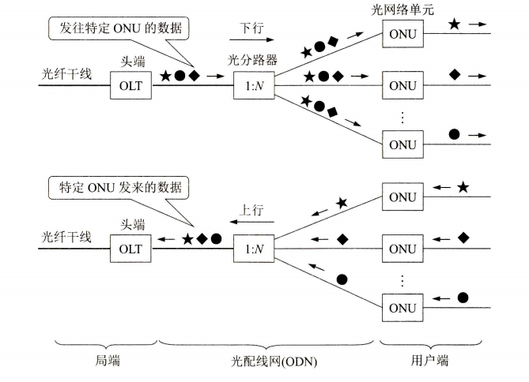

2022年9月24日
近年来宽带上网已入家家户户，电信移动联通等互联网服务运营商（ISP）家喻户晓，所推产品大多为光纤到户（FTTH），所谓光纤到户，就是把光纤一直铺设到用户家庭，只有在光纤进入用户的家门后，才通过用户终端设备将光信号转换为电信号，从而使用户获得高速上网。那么FTTH技术是如何在物理上提供网络接入的呢？
从申请安装宽带说起，用户向运营商申请宽带后，约定时间安装小哥就直接上门把光纤拉进屋内，并提供一个俗称光猫的用户终端设备，连上光纤，配置开通账号就完成了初步的安装，一般情况下电脑与终端设备通过网线相连就可以上网了，相信大家都有过这样的经历。那么家中的用户终端设备其实有个专业名词，光网络单元ONU，当我们上网时，访问请求、网站页面或文件等数据都是由这个设备转发的。
我们知道，一个家庭用户远远用不了一根光纤的通信容量，运营商也不会为每个用户单独拉一根专线直接连到运营商网络，出于有效利用光纤资源，节约成本，往往是数十个家庭用户共享一根光纤干线接入运营商网络，因此在光纤干线和广大用户之间，还需要铺设一段中间的转换装置即光配线网ODN，图1是现在广泛使用的无源光配线网的示意图。

图1 无源光配线网的组成
图中光线路终端OLT是连接到光纤干线的终端设备，OLT把收到的下行数据发往无源的光分路器，然后用广播方式向所有用户端的光网络单元ONU发送。每个ONU根据数据上特有的标识只接收发送给自己的数据，然后转发用户。当ONU发送上行数据时，光分路器把各家ONU发来的上行数据汇总后，以时分复用的方式发往OLT。以上是多用户共享光纤干线的一般模式。光配线网采用波分复用，上行和下行分别使用不同的波长。
曾几何时，与同事聊光纤问题，依稀记得以下两点。一是光分路器问题，其实是共享信道的通病，注意到光分路器用广播方式向所有用户发送数据，因为是广播方式，每个ONU可根据特有的标识接收发送给自己的数据，当然存在根据别人标识接收别人数据的风险。二是光信号泄露问题，光信号在光纤中虽说是全反射传播或直线传播，但存在小部分的光信号向光纤外射出泄露的可能，尤其是在光纤弯曲处，形变导致材质特性变化，泄露风险会变大，从而可能存在正在传送的信息泄露。因此，如果对信息泄露比较敏感，那么必须通信加密。